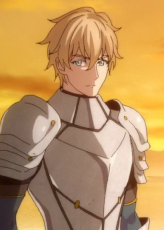
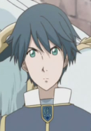
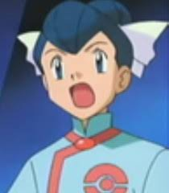

|  |
Gawain |
Fate/Extra Last Encore: Illustrias Geocentric Theory |
Gawain or Saber is a servant of Leonardo Harway in the Moon Cell Holy Grail War. He is known as the White Knight of the Round. He performs all sorts of works. He is serious but has no gloomy aspects. His relationship with wih Leo is like brothers who watch each other. |
|  |
Romeo Candorebanto Montague |
Romeo x Juliet |
Romeo Candorebanto Montague is a nobleman of the Montague. Romeo is kind, caring and selfless man. He opposed his father's cruelty and tryanny. He is in love with Juliet. |
|  |
Tate |
Pokemon Advanced Generations |
Tate is the twin of Liza. He is the gym leader of Mossdeep's City Gym. He gets picked on by his his sister. |